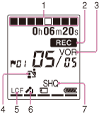

IC RecorderICD-PX333/PX333F
Display when recording

Note
- The window shown above displays indications, numbers or items for explanatory purposes. The actual window may differ from those displayed here.
- Recording progress animation display
Displays the progress of a recording in animation.
- Recording indicator
Appears while the IC recorder is recording
- VOR recording indicator
Appears when “VOR” is set to “ON” in the menu.
- Scene select indicator
Displays the currently selected scene used for recording. Appears when a scene is set.
: Meeting
: Voice Notes
: Interview
: Lecture
: Audio IN
- LCF (Low Cut Filter) indicator
Appears when “LCF(Low Cut)” is set to “ON” in the menu.
- Microphone sensitivity indicator
Displays the microphone sensitivity that has been set in the menu.
: High
: Medium
: Low
- Recording mode indicator
Recording mode indicator Displays the recording mode set in the menu when the IC recorder is in the stop or recording mode, and displays the current recording mode when the IC recorder is in the playback mode:
SHQ: Super high-quality monaural recording mode (192kbps(MONO))
HQ: High-quality monaural recording mode (128kbps(MONO))
SP: Standard play monaural recording mode (48kbps(MONO))
LP: Long play monaural recording mode (8kbps(MONO))